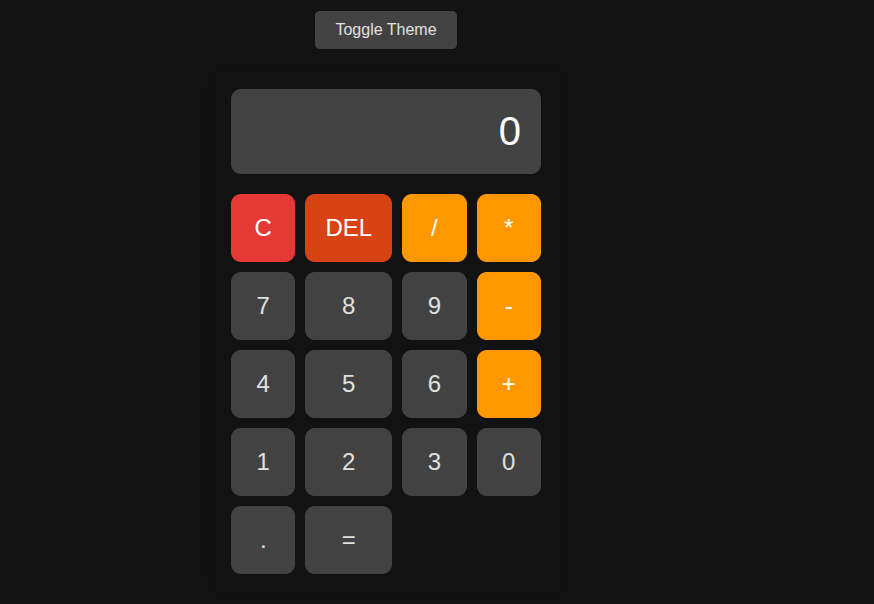

Hi there,
Jacson Burgos
Sign-up Form
Formulario de registro con validación básica, diseño limpio y respuesta visual para usuarios.

Etch-a-Sketch
Aplicación para dibujar con diferentes colores, tamaños de pincel y funcionalidad de reinicio.

Calculator
Calculadora funcional con tema oscuro y claro, operaciones básicas y memoria.
Rock Paper Scissors
Juego clásico contra la computadora con sistema de puntuación y animaciones.
Landing Page
Página de presentación con diseño moderno, secciones bien definidas y navegación intuitiva.

Recetas Odin
Sitio web con recetas culinarias, categorías organizadas y diseño responsivo para todos los dispositivos.

Project Links
Sign-up Form
Formulario de registro
Calculator
Calculadora funcional
Etch-a-Sketch
Aplicación para dibujar
Rock Paper Scissors
Juego interactivo
Landing Page
Página de presentación
Recetas Odin
Recetas culinarias